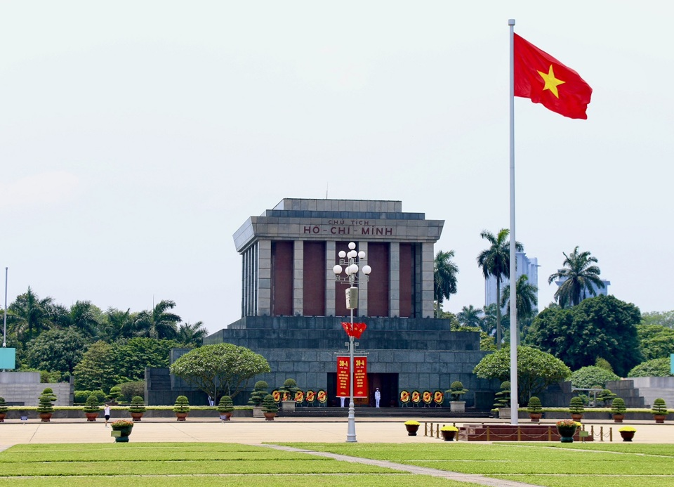

Thông Tin Tour
Giá: 4,000,000 VND
Ngày đi: 20/12/2024
Phương tiện: Máy bay lượt đi + khứ hồi và xe limousine.
Thời gian: 3 ngày 2 đêm
Giới thiệu: Tour tham quan những di tích lịch sử và thưởng thức ẩm thực Hà Nội.
Lịch Trình Tour
- Ngày 1: Đến Hà Nội, tham quan Văn Miếu, Hồ Hoàn Kiếm.
- Ngày 2: Thăm Lăng Bác, trải nghiệm ẩm thực tại phố cổ.
- Ngày 3: Tự do khám phá, mua sắm, sau đó trả phòng và trở về.
Điểm Tham Quan Nổi Bật
-  Lăng Chủ tịch Hồ Chí Minh
-
 Văn Miếu Quốc Tử Giám: Được xây dựng vào cuối thế kỷ XI ở phía Nam Kinh thành Thăng Long.
Văn Miếu Quốc Tử Giám: Được xây dựng vào cuối thế kỷ XI ở phía Nam Kinh thành Thăng Long.
- Phố cổ Hà Nội: Tọa lạc ở phía Tây và phía Bắc của Hồ Hoàn Kiếm ngay trung tâm Hà Nội.
- Hồ Hoàn Kiếm: Nơi thưởng thức ẩm thực và mua sắm quà lưu niệm.
Ẩm Thực Đặc Sắc
Tour sẽ giới thiệu đến du khách các món ăn nổi tiếng của Hà Nội:
- Phở bò Hà Nội: Là món ăn đặc sản, thơm ngon nổi tiếng của vùng đất Hà thành.
-
 Bún chả Hà Nội: Đây là một trong những đặc sản đặc trưng của ẩm thực Hà thành.
Bún chả Hà Nội: Đây là một trong những đặc sản đặc trưng của ẩm thực Hà thành.
- Bún thang: Món ăn nổi tiếng bởi sự cầu kỳ nhưng thể hiện phong cách thanh nhã của ẩm thực của người Tràng An.
Phương Tiện Di Chuyển
Du khách có thể lựa chọn:
- Máy bay lượt đi + khứ hồi vô cùng tiện nghi.
- Xe limousine sang trọng, thoải mái.